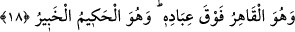

18. O, kullarının üstünde her türlü tasarrufa sahiptir. O, hüküm ve hikmet
sahibidir, herşeyden haberdardır.
“O, kullarının üstünde tam hakimdir.” O öyle üstün bir kudrettir ki, hiç bir güç
O’nun ululuğuna erişemez. O’nu aciz bırakamaz. “O, hüküm ve hikmet sâhibidir.”
O’nun yaptığı ve emrettiği her şey yerli yerincedir. “Herşeyden haberdardır.” O,
kullarının her halinden haberdar olur ve gizli işlerini de bilir.
Allah Teâlâ’nın kahrı (tam hâkimiyeti) ve şânının yüceliği, maddî yükseklik olarak
tasvir edilmiş ve temsîlî istiâre yoluyla ‘üstünde’ olarak ifade edilmiştir. Şu halde “O,
kullarının üstünde tam hâkimdir.” ifadesi Allah’ın kudretinin kemaline, “O, her şeyi
yerli yerince yapan, herşeyden haberdardır.” buyruğu ise Allah’ın ilminin kemâline
işaret eder.
Molla Fenârî, tefsirinde şöyle demiştir: Âyetteki “kullarının üstündedir” ifadesi,
Allah’ın kudreti bakımındandır, mekan bakımından değil. Çünkü O’nun şânı yücedir ve
ister mevcut olsun, ister olmasın mümkinatta (varlığı ve yokluğu câiz olan varlıklar
üzerinde) tam hâkim ve tasarruf sâhibidir. Çünkü O, varlık ile yokluğu birbirinin zıddı
ile kahreder, hâkim olur. Yokluğu icad ve yaratma ile, mevcûdâtı ise yok etme ve bozma
ile kahreder, üstün gelir.
et-Te’vilâtü’n-necmiyye’de şöyle denilmiştir: Allah’ın kahrı (kullarına olan
üstünlüğü), bütün kullarına şâmildir. Kâfirlerin kahrı, kalplerinin ölmesi ve nefislerinin
diri olması iledir. Çünkü, yaratılışın başlangıcında ruhlar üzerine saçılan nur,
kendilerine isabet etmediği için onlar tabîatın karanlıklarında yollarını kaybetmişler ve
şeriatın nuruna ulaşamamışlardır.
Mü’minlerin nefislerinin kahrı, şerîat nurları iledir. Allah onları tabîatın
karanlıklarından çıkaracak tâate muvaffak kılmıştır. Allah, kendisini sevenlerin
kalplerini de iştiyak acılarıyle kahretmiş, onlara müşâhedesini lutfederek onunla ünsiyet
ettirmiştir. Sıddîkların ruhlarının kahrı ise celâl sıfatının tecellisi ile olmuştur.
Hulâsa Allah’dan başka her şey O’nun izzeti altında makhûr ve mağlûbdur.
Samediyyeti, yani her şeyden müstağni oluşu karşısında hor ve zelildir.
Şu halde kula gereken, Mevlâ’sını hakkıyle tanımak ve O’na kulluk etmektir. O Allah
ki herşeyi yaratmış, bütün mahlûkatı yoktan var etmiştir ve onlara tam olarak hâkim
olmuş ve tasarrufu altına almıştır.
Abdülvahid b. Zeyd (k.s.)’un şöyle dediği rivayet olunur: Bir gemide seyahat
ediyordum. Rüzgar bizi bir adaya attı. Baktım ki orada bir adam puta tapınıyor. Ona:
“Ey adam, kime ibadet ediyorsun?” dedik. Puta işaret etti. Ona: “Senin taptığın bu şey